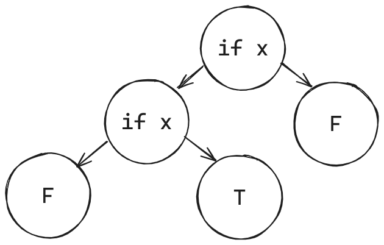

Supercompilation by example
Supercompilation is a deep program transformation technique due to V. F. Turchin, a prominent computer scientist, cybernetician, physicist, and Soviet dissident.
He described the concept as follows 1:
A supercompiler is a program transformer of a certain type. The usual way of thinking about program transformation is in terms of some set of rules which preserve the functional meaning of the program, and a step-by-step application of these rules to the initial program. … The concept of a supercompiler is a product of cybernetic thinking. A program is seen as a machine. To make sense of it, one must observe its operation. So a supercompiler does not transform the program by steps; it controls and observes (SUPERvises) the running of the machine that is represented by the program; let us call this machine M1. In observing the operation of M1, the supercompiler COMPILES a program which describes the activities of M1, but it makes shortcuts and whatever clever tricks it knows in order to produce the same effect as M1, but faster. The goal of the supercompiler is to make the definition of this program (machine) M2 self-sufficient. When this is acheived, it outputs M2 in some intermediate language Lsup and simply throws away the (unchanged) machine M1.
A supercompiler is interesting not only as a program transformer but also as a very general philosophical concept:
The supercompiler concept comes close to the way humans think and make science. We do not think in terms of rules of formal logic. We create mental and linguistic models of the reality we observe. How do we do that? We observe phenomena, generalize observations, and try to construct a self-sufficient model in terms of these generalizations. This is also what the supercompiler does. … A supercompiler would run M1, in a general form, with unknown values of variables, and create a graph of states and transitions between possible configurations of the computing system. … To make it finite, the supercompiler performs the operation of generalization on the system configurations in such a manner that it finally comes to a set of generalized configurations, called basic, in terms of which the behavior of the system can be expressed. Thus the new program becomes a self-sufficient model of the old one.
Since the above explanations are hard to comprehend at first sight, I will try to illustrate supercompilation by example.
Let the object language of supercompilation be a simple first-order functional language called SLL, which stands for Simple Lazy Language. It consists of:
- Variables: just regular symbolic identifiers.
- Examples:
a,b,c.
- Examples:
- Constructors: symbolic identifiers that wrap their
arguments of arbitrary structure.
- Examples:
Foo(a, b, c),Bar(a, Foo(a), c).
- Examples:
- F-functions: indifferent functions that
just transform their arguments.
- Examples:
foo(a, b, c) = Foo(a, b, Bar(c));bar(a, b, c) = foo(Bar(a), b, c);
- Examples:
- G-functions: curious functions that
pattern-match on their first argument.
- Examples: see below.
Suppose that natural numbers are represented as Z,
S(Z), S(S(Z)), and so on 2.
Then, we can define addition as the following g-function (from 3):
\[ \begin{aligned} add(Z, y) &= y; \\ add(S(x), y) &= S(add(x, y)); \end{aligned} \]
A supercompiler’s input is a pair of an expression and program, the latter being a set of definitions of f- and g-functions. This pair is usually called a task.
Let the task for a hypothetic supercompiler be the expression
add(S(Z), S(S(Z))) together with the definition of
add above. In this case, the work of a supercompiler is as
simple as sequential reduction of the initial expression to the target
expression S(S(S(Z))), according to the rules of
add:
However, to think of a supercompiler as of a mere expression
evaluator is a grave mistake. Let us consider what happens when it
encounters a variable that does not stand for some concrete
expression. For example, let the task be add(S(S(Z)), b)
with the same definition of add, where b is
understood as “any” expression:
It just works!
A supercompiler saw the variable b when trying to reduce
S(S(add(Z, b))), and then it just substituted
y (from the rule add(Z, y)) for this
b. After that, supercompilation has stopped because the
actual expression for b is unknown at this point. As a
result, we got S(S(b)), which is equivalent to the initial
expression.
Now consider what happens if there is a need to
pattern-match on an unknown variable. In this case, we cannot
just proceed with “direct” computation since there are several
possibilities of the form the variable may take. Suppose that the task
is add(a, 2) 4 with the same function
add. What a supercompiler does is that it analyze
the expression add(a, 2) according to all the possibilities
of a, which are either Z or
S(v1), where v1 is some fresh variable
identifier. The situation looks like this:
A supercompiler has built an (incomplete) process tree that
describes the execution of add(a, 2) in a general sense. In
the first branch, a is substituted for Z
according to the first rule of add; in the second branch,
a is substituted for S(v1) according to the
second rule of add. The resulting two nodes are labelled
with expressions that resulted in reducing a particular substitution of
the parent expression.
However, the supercompilation is not complete yet: there is still a
node labelled as S(add(v1, 2)). A supercompiler decides to
decompose it, meaning to move add(v1, 2) out of
S(...) in the following way:
After that, if we proceed with supercompiling
add(v1, 2), we will eventually arrive at the initial
expression add(a, 2). This is because the expressions
add(v1, 2) and add(a, 2) are alpha
equivalent, meaning that they only differ in the names of
variables. A supercompiler should be smart enough to detect this
situation of alpha equivalence and, instead of continuing infinite
supercompilation, just draw a back arrow from add(v1, 2) to
the initial node as depicted below:
Hooray, the supercompilation of add(a, 2) is now
complete!
What is left is to perform residualization – the process of
converting a process tree to an SLL task, a self-sufficient
model of the initial program. Every node in the graph (except for
leaf nodes) is transformed into a function whose parameters are the set
of free variables from the node expression; each function is given a
unique name. For example, if we see the node add(a, 2)
pointing to 2 and S(add(v1, 2)), we must
generate a new g-function of the following form:
\[ \begin{aligned} g1(Z) &= \dots; \\ g1(S(v1)) &= \dots; \end{aligned} \]
We can complete the first branch by inserting 2 in place
of ...:
\[ \begin{aligned} g1(Z) &= 2; \\ g1(S(v1)) &= \dots; \end{aligned} \]
Since the second branch leads to a node that decomposes a
constructor, we generate a new f-function and call it inside
S:
\[ \begin{aligned} g1(Z) &= 2; \\ g1(S(v1)) &= S(f1(v1)); \\ f1(v1) &= \dots; \end{aligned} \]
According to the graph, the body of f1 should be
add(v1, 2), but since now add stands for
g1, the body will be g1(v1):
\[ \begin{aligned} g1(Z) &= 2; \\ g1(S(v1)) &= S(f1(v1)); \\ f1(v1) &= g1(v1); \end{aligned} \]
Since f1 is redundant, we can inline it as follows:
\[ \begin{aligned} g1(Z) &= 2; \\ g1(S(v1)) &= S(g1(v1)); \end{aligned} \]
This is the final residual program; the residual
expression will be g1(a), since a is
the only free variable from the initial expression. As you can see, the
definition of g1 is simpler than the original function
add in the sense that it accepts only one argument; the
second argument has been specialized to 2 during
supercompilation.
Perhaps a more interesting example would be specializing an interpreter to a concrete program, obtaining a compiled “executable”. In the partial computation literature, this is called the first Futamura projection 5.
Consider the following interpreter eq (also from 6):
\[ \begin{aligned} eq(Z, y) &= eqZ(y); \\ eq(S(x), y) &= eqS(y, x); \\ eqZ(Z) &= True; \\ eqZ(S(x)) &= False; \\ eqS(Z, x) &= False; \\ eqS(S(y), x) &= eq(x, y); \end{aligned} \]
which compares two Peano numbers for equality, resulting in either
True or False.
Now consider the expression eq(S(S(Z)), x) with the
above definition of eq; supercompilation will produce the
following residual program:
\[ \begin{aligned} eqZ3(Z) &= True; \\ eqZ3(S(v)) &= False; \\ eqS2(Z) &= False; \\ eqS2(S(v)) &= eqZ3(v); \\ eqS1(Z) &= False; \\ eqS1(S(v)) &= eqS2(v); \end{aligned} \]
together with the residual expression eqS1(x). In a
sense, we have obtained a compiled version of eq
specialized to S(S(Z)), because eqS1
pattern-matches only on an unknown variable x instead of
the known “program” S(S(Z)).
However, supercompilation is inherently more powerful than classical partial evaluation. In Turchin’s own words 7:
Although supercompilation includes partial evaluation, it does not reduce to it. Supercompilation can lead to a very deep structural transformation of the original program; it can improve the program even if all the actual parameters in the function calls are variable. The supercompilation process aims at the reduction of redundancy in the original program, but this redundancy does not necessarily come from fixed values of variables; it can result from nested loops, repeated variables, and so on.
That being said, a sufficiently smart supercompiler can transform a two-pass list mapping into a single-pass algorithm, essentially performing list fusion:
A similar example can be found in “Rethinking Supercompilation” by Neil Mitchell 8 and in 9 (section 6, “Examples of supercompilation”).
Although I have deliberately skipped a few important aspects of supercompilation, most notably termination checking (see homeomorphic embedding 10 11 12), the material presented in this section should be enough to understand the rest of the text. An interested reader may go through the references and also look into 13 14 15 for some insight into a more general topic of metacomputation. A more thorough introduction to supercompilation can be found in “Supercompilation: Ideas and Methods” by Ilya Klyuchnikov and Dimitur Krustev.
SAT and dead code elimination
Not let us consider how SAT can be reduced to the problem of dead code elimination.
Consider a language whose expressions are:
If (x, m, n), wherexis a variable,mandnare expressions.TandF, which are constants.
This language is enough to encode any SAT problem. We can encode each clause in the formula as follows (in pseudocode):
\[ \begin{aligned} OR(x, \dots) &= If (x, T, \dots); \\ OR(NOT \ x, \dots) &= If (x, \dots, T); \end{aligned} \]
Then OR(x, OR(y, OR(NOT z, F))) would correspond to “x
OR y OR NOT z”:
Now consider the encoding of a conjunction of clauses 16:
\[ \begin{aligned} AND(If(x, m, n), \dots) &= If(x, AND(m, \dots), AND(n, \dots)); \\ AND(T, \dots) &= \dots; \\ AND(F, \dots) &= F; \end{aligned} \]
Then AND(OR(x, F), AND(OR(NOT y, F), T)) would
correspond to “x AND NOT y”:
Is the formula satisfiable? Yes, because we can assign x
to T and y to F.
Now consider the formula
AND(OR(x, F), AND(OR(NOT x, F), T)), which is equivalent to
“x AND NOT x”:

Is the formula satisfiable? To figure out, let us remove dead paths from the formula:
We have replaced the lower if x node with its first
child F because x was already assigned
T in this path. Since there are no T leafs in
the resulting tree, it is correct to say that the formula is
unsatisfiable: with any value of x we will arrive at
F.
One more example is
AND(OR(x, F), AND(OR(x, OR(y, F)), AND(OR(NOT x, F), T))),
which is equivalent to “x AND (y OR z) AND NOT x”:
After removing dead paths:
The general observation is that, after encoding a CNF formula as an
if-tree and removing dead paths from it, if there is at least one
T leaf, the initial formula is satisfiable; otherwise, the
formula is unsatisfiable because there is no path from the root that
will take us to T. Think about it for a moment.
Having this technique at our disposal, we can proceed to the key section.
Supercompilation of SAT
Positive supercompilation is a particular model of
supercompilation that propagates only positive information when
doing case analysis. For example, when supercompiling
add(a, 2), a positive supercompiler will substitute (i.e.,
propagate) a=Z and a=S(v1) to the respective
children nodes. On the other hand, negative information means
that some variable is not equal to a particular value (or
values); a typical example is the “default” case in a pattern-matching
construction. A perfect supercompiler is a supercompiler that
is able to propagate both positive and negative information.
In this post, we only deal with positive supercompilation. Consider the schematic representation of the CNF formula “x AND NOT x” again:
Imagine that if, T, and F are
SLL constructors, with if holding three arguments: two
branches and a variable, which is T in the first branch and
F in the second. If we analyze the uppermost
if x, we will get the following “process tree” 17:
Supercompilation acted as a dead code eliminator! This is because
x=T was propagated to the first branch of the uppermost
if x, resulting in the elimination of the branch
T of the innermost if x. The second uppermost
branch remains unchanged.
What if we somehow launch analysis of the whole if-tree? If so, we
would essentially eliminate all dead paths from the corresponding
expression, which is equivalent to solving the SAT problem! As I have
mentioned in the previous section, if there is at least one
T leaf in the final tree, the formula is satisfiable
because this T is reachable from the root. Otherwise (if
there is no T), the formula is unsatisfiable 18.
Here is a complete SAT solver written in SLL:
\[ \begin{aligned} or(Var(x), rest) &= If(x, T, rest); \\ or(Not(x), rest) &= If(x, rest, T); \\ \\ and(If(x, m, n), rest) &= If(x, and(m, rest), and(n, rest)); \\ and(T, rest) &= rest; \\ and(F, rest) &= F; \\ \\ solve(If(x, m, n)) &= analyze(x, solve(m), solve(n)); \\ solve(T) &= T; \\ solve(F) &= F; \\ \\ analyze(T, m, n) &= m; \\ analyze(F, m, n) &= n; \end{aligned} \]
Without blank lines, it is 10 lines of code! This is probably the simplest (and the slowest!) SAT solver in the history of humanity.
The functions or and and are the encodings
of the logical OR and AND operations, respectively. The function
solve is the main entry point of the solver, and
analyze is a helper function that selects one of the two
branches of an if-expression according to the value of the
first argument. Since solve traverses the whole expression
and invokes analyze for each If (x, m, n), all
If-nodes in the expression are case-analyzed when
solve(formula) is being supercompiled.
To test the solver, I will use my own positive
supercompiler written in OCaml. The definitions of or,
and, solve, and analyze will
be:
let g_rules =
[
( "or",
[
( ("Var", [ "x" ]),
[ "rest" ],
ctr_call ("If", [ Var "x"; ctr_call ("T", []); Var "rest" ]) );
( ("Not", [ "x" ]),
[ "rest" ],
ctr_call ("If", [ Var "x"; Var "rest"; ctr_call ("T", []) ]) );
] );
( "and",
[
( ("If", [ "x"; "m"; "n" ]),
[ "rest" ],
ctr_call
( "If",
[
Var "x";
g_call ("and", Var "m", [ Var "rest" ]);
g_call ("and", Var "n", [ Var "rest" ]);
] ) );
(("T", []), [ "rest" ], Var "rest");
(("F", []), [ "rest" ], ctr_call ("F", []));
] );
( "solve",
[
( ("If", [ "x"; "m"; "n" ]),
[],
g_call
( "analyze",
Var "x",
[ g_call ("solve", Var "m", []); g_call ("solve", Var "n", []) ]
) );
(("T", []), [], ctr_call ("T", []));
(("F", []), [], ctr_call ("F", []));
] );
( "analyze",
[ (("T", []), [ "m"; "n" ], Var "m"); (("F", []), [ "m"; "n" ], Var "n") ]
);
]And some helper functions in OCaml to conveniently construct CNF formulas:
let rec clause = function
| `Var x :: rest -> g_call ("or", ctr_call ("Var", [ Var x ]), [ clause rest ])
| `Not x :: rest -> g_call ("or", ctr_call ("Not", [ Var x ]), [ clause rest ])
| [] -> ctr_call ("F", [])
let rec formula = function
| hd :: rest -> g_call ("and", hd, [ formula rest ])
| [] -> ctr_call ("T", [])The function check calls optimize, which is
supercompilation + residualization, on a given formula, and
compares the resudual task with expected:
let check ~expected formula =
check ~equal:[%derive.eq: string * string list]
~show:[%derive.show: string * string list] ~expected
~actual:(optimize ~g_rules (g_call ("solve", formula, [])))Testing “x AND y”:
let () =
check
~expected:
( "g0(x, y)",
[
"g0(F(), y) = F()";
"g0(T(), y) = g1(y)";
"g1(F()) = F()";
"g1(T()) = T()";
] )
(formula [ clause [ `Var "x" ]; clause [ `Var "y" ] ]);The residual function g0 acts as the AND operation. The
formula is satisfiable.
Testing “(x OR y) AND NOT z”:
check
~expected:
( "g0(x, y, z)",
[
"g0(F(), y, z) = g1(y, z)";
"g0(T(), y, z) = g3(z)";
"g1(F(), z) = F()";
"g1(T(), z) = g2(z)";
"g2(F()) = T()";
"g2(T()) = F()";
"g3(F()) = T()";
"g3(T()) = F()";
] )
(formula [ clause [ `Var "x"; `Var "y" ]; clause [ `Not "z" ] ]);The formula is TRUE when either “x” or “y” are TRUE (or both), whilst “z” must always be FALSE. The formula is satisfiable.
Testing “(x OR NOT z) AND (y OR z OR NOT x)”:
check
~expected:
( "g0(x, y, z)",
[
"g0(F(), y, z) = g1(z, y)";
"g0(T(), y, z) = g3(y, z)";
"g1(F(), y) = g2(y)";
"g1(T(), y) = F()";
"g2(F()) = T()";
"g2(T()) = T()";
"g3(F(), z) = g4(z)";
"g3(T(), z) = T()";
"g4(F()) = F()";
"g4(T()) = T()";
] )
(formula
[
clause [ `Var "x"; `Not "z" ]; clause [ `Var "y"; `Var "z"; `Not "x" ];
]);Ditto.
Testing “(a OR b) AND (NOT b OR NOT d) AND (c OR d) AND (NOT d OR NOT e) AND (e OR NOT f) AND (f OR NOT g) AND (f OR g) AND (g OR NOT p) AND (h OR NOT i) AND (NOT h OR NOT n) AND (i OR g) AND (i OR NOT g) AND (NOT g OR NOT k) AND (g OR l) AND (k OR l) AND (m OR n) AND (n OR NOT o) AND (o OR p)”:
Show the test case
check
~expected:
( "g0(a, b, c, d, e, f, g, h, i, k, l, m, n, o, p)",
[
"g0(F(), b, c, d, e, f, g, h, i, k, l, m, n, o, p) = g1(b, c, d, e, \
f, g, h, i, k, l, m, n, o, p)";
"g0(T(), b, c, d, e, f, g, h, i, k, l, m, n, o, p) = g30(b, c, d, e, \
f, g, h, i, k, l, m, n, o, p)";
"g1(F(), c, d, e, f, g, h, i, k, l, m, n, o, p) = F()";
"g1(T(), c, d, e, f, g, h, i, k, l, m, n, o, p) = g2(d, c, e, f, g, \
h, i, k, l, m, n, o, p)";
"g10(F(), h, i, k, l, m, n, o) = g11(h, i, k, l, m, n, o)";
"g10(T(), h, i, k, l, m, n, o) = F()";
"g11(F(), i, k, l, m, n, o) = g12(i)";
"g11(T(), i, k, l, m, n, o) = g13(n, i, k, l, m, o)";
"g12(F()) = F()";
"g12(T()) = F()";
"g13(F(), i, k, l, m, o) = g14(i, k, l, m, o)";
"g13(T(), i, k, l, m, o) = F()";
"g14(F(), k, l, m, o) = F()";
"g14(T(), k, l, m, o) = g15(l, k, m, o)";
"g15(F(), k, m, o) = F()";
"g15(T(), k, m, o) = g16(k, m, o)";
"g16(F(), m, o) = g17(m, o)";
"g16(T(), m, o) = g19(m, o)";
"g17(F(), o) = F()";
"g17(T(), o) = g18(o)";
"g18(F()) = F()";
"g18(T()) = F()";
"g19(F(), o) = F()";
"g19(T(), o) = g20(o)";
"g2(F(), c, e, f, g, h, i, k, l, m, n, o, p) = g3(c, e, f, g, h, i, \
k, l, m, n, o, p)";
"g2(T(), c, e, f, g, h, i, k, l, m, n, o, p) = F()";
"g20(F()) = F()";
"g20(T()) = F()";
"g21(F(), i, k, l, m, n, o, p) = g22(i)";
"g21(T(), i, k, l, m, n, o, p) = g23(n, i, k, l, m, o, p)";
"g22(F()) = F()";
"g22(T()) = F()";
"g23(F(), i, k, l, m, o, p) = g24(i, k, l, m, o, p)";
"g23(T(), i, k, l, m, o, p) = F()";
"g24(F(), k, l, m, o, p) = F()";
"g24(T(), k, l, m, o, p) = g25(k, l, m, o, p)";
"g25(F(), l, m, o, p) = g26(l, m, o, p)";
"g25(T(), l, m, o, p) = F()";
"g26(F(), m, o, p) = F()";
"g26(T(), m, o, p) = g27(m, o, p)";
"g27(F(), o, p) = F()";
"g27(T(), o, p) = g28(o, p)";
"g28(F(), p) = g29(p)";
"g28(T(), p) = F()";
"g29(F()) = F()";
"g29(T()) = T()";
"g3(F(), e, f, g, h, i, k, l, m, n, o, p) = F()";
"g3(T(), e, f, g, h, i, k, l, m, n, o, p) = g4(e, f, g, h, i, k, l, \
m, n, o, p)";
"g30(F(), c, d, e, f, g, h, i, k, l, m, n, o, p) = g31(c, d, e, f, \
g, h, i, k, l, m, n, o, p)";
"g30(T(), c, d, e, f, g, h, i, k, l, m, n, o, p) = g66(d, c, e, f, \
g, h, i, k, l, m, n, o, p)";
"g31(F(), d, e, f, g, h, i, k, l, m, n, o, p) = g32(d, e, f, g)";
"g31(T(), d, e, f, g, h, i, k, l, m, n, o, p) = g36(d, e, f, g, h, \
i, k, l, m, n, o, p)";
"g32(F(), e, f, g) = F()";
"g32(T(), e, f, g) = g33(e, f, g)";
"g33(F(), f, g) = g34(f, g)";
"g33(T(), f, g) = F()";
"g34(F(), g) = g35(g)";
"g34(T(), g) = F()";
"g35(F()) = F()";
"g35(T()) = F()";
"g36(F(), e, f, g, h, i, k, l, m, n, o, p) = g37(e, f, g, h, i, k, \
l, m, n, o, p)";
"g36(T(), e, f, g, h, i, k, l, m, n, o, p) = g63(e, f, g)";
"g37(F(), f, g, h, i, k, l, m, n, o, p) = g38(f, g)";
"g37(T(), f, g, h, i, k, l, m, n, o, p) = g40(f, g, h, i, k, l, m, \
n, o, p)";
"g38(F(), g) = g39(g)";
"g38(T(), g) = F()";
"g39(F()) = F()";
"g39(T()) = F()";
"g4(F(), f, g, h, i, k, l, m, n, o, p) = g5(f, g)";
"g4(T(), f, g, h, i, k, l, m, n, o, p) = g7(f, g, h, i, k, l, m, n, \
o, p)";
"g40(F(), g, h, i, k, l, m, n, o, p) = g41(g)";
"g40(T(), g, h, i, k, l, m, n, o, p) = g42(g, h, i, k, l, m, n, o, p)";
"g41(F()) = F()";
"g41(T()) = F()";
"g42(F(), h, i, k, l, m, n, o, p) = g43(p, h, i, k, l, m, n, o)";
"g42(T(), h, i, k, l, m, n, o, p) = g54(h, i, k, l, m, n, o, p)";
"g43(F(), h, i, k, l, m, n, o) = g44(h, i, k, l, m, n, o)";
"g43(T(), h, i, k, l, m, n, o) = F()";
"g44(F(), i, k, l, m, n, o) = g45(i)";
"g44(T(), i, k, l, m, n, o) = g46(n, i, k, l, m, o)";
"g45(F()) = F()";
"g45(T()) = F()";
"g46(F(), i, k, l, m, o) = g47(i, k, l, m, o)";
"g46(T(), i, k, l, m, o) = F()";
"g47(F(), k, l, m, o) = F()";
"g47(T(), k, l, m, o) = g48(l, k, m, o)";
"g48(F(), k, m, o) = F()";
"g48(T(), k, m, o) = g49(k, m, o)";
"g49(F(), m, o) = g50(m, o)";
"g49(T(), m, o) = g52(m, o)";
"g5(F(), g) = g6(g)";
"g5(T(), g) = F()";
"g50(F(), o) = F()";
"g50(T(), o) = g51(o)";
"g51(F()) = F()";
"g51(T()) = F()";
"g52(F(), o) = F()";
"g52(T(), o) = g53(o)";
"g53(F()) = F()";
"g53(T()) = F()";
"g54(F(), i, k, l, m, n, o, p) = g55(i)";
"g54(T(), i, k, l, m, n, o, p) = g56(n, i, k, l, m, o, p)";
"g55(F()) = F()";
"g55(T()) = F()";
"g56(F(), i, k, l, m, o, p) = g57(i, k, l, m, o, p)";
"g56(T(), i, k, l, m, o, p) = F()";
"g57(F(), k, l, m, o, p) = F()";
"g57(T(), k, l, m, o, p) = g58(k, l, m, o, p)";
"g58(F(), l, m, o, p) = g59(l, m, o, p)";
"g58(T(), l, m, o, p) = F()";
"g59(F(), m, o, p) = F()";
"g59(T(), m, o, p) = g60(m, o, p)";
"g6(F()) = F()";
"g6(T()) = F()";
"g60(F(), o, p) = F()";
"g60(T(), o, p) = g61(o, p)";
"g61(F(), p) = g62(p)";
"g61(T(), p) = F()";
"g62(F()) = F()";
"g62(T()) = T()";
"g63(F(), f, g) = g64(f, g)";
"g63(T(), f, g) = F()";
"g64(F(), g) = g65(g)";
"g64(T(), g) = F()";
"g65(F()) = F()";
"g65(T()) = F()";
"g66(F(), c, e, f, g, h, i, k, l, m, n, o, p) = g67(c, e, f, g, h, \
i, k, l, m, n, o, p)";
"g66(T(), c, e, f, g, h, i, k, l, m, n, o, p) = F()";
"g67(F(), e, f, g, h, i, k, l, m, n, o, p) = F()";
"g67(T(), e, f, g, h, i, k, l, m, n, o, p) = g68(e, f, g, h, i, k, \
l, m, n, o, p)";
"g68(F(), f, g, h, i, k, l, m, n, o, p) = g69(f, g)";
"g68(T(), f, g, h, i, k, l, m, n, o, p) = g71(f, g, h, i, k, l, m, \
n, o, p)";
"g69(F(), g) = g70(g)";
"g69(T(), g) = F()";
"g7(F(), g, h, i, k, l, m, n, o, p) = g8(g)";
"g7(T(), g, h, i, k, l, m, n, o, p) = g9(g, h, i, k, l, m, n, o, p)";
"g70(F()) = F()";
"g70(T()) = F()";
"g71(F(), g, h, i, k, l, m, n, o, p) = g72(g)";
"g71(T(), g, h, i, k, l, m, n, o, p) = g73(g, h, i, k, l, m, n, o, p)";
"g72(F()) = F()";
"g72(T()) = F()";
"g73(F(), h, i, k, l, m, n, o, p) = g74(p, h, i, k, l, m, n, o)";
"g73(T(), h, i, k, l, m, n, o, p) = g85(h, i, k, l, m, n, o, p)";
"g74(F(), h, i, k, l, m, n, o) = g75(h, i, k, l, m, n, o)";
"g74(T(), h, i, k, l, m, n, o) = F()";
"g75(F(), i, k, l, m, n, o) = g76(i)";
"g75(T(), i, k, l, m, n, o) = g77(n, i, k, l, m, o)";
"g76(F()) = F()";
"g76(T()) = F()";
"g77(F(), i, k, l, m, o) = g78(i, k, l, m, o)";
"g77(T(), i, k, l, m, o) = F()";
"g78(F(), k, l, m, o) = F()";
"g78(T(), k, l, m, o) = g79(l, k, m, o)";
"g79(F(), k, m, o) = F()";
"g79(T(), k, m, o) = g80(k, m, o)";
"g8(F()) = F()";
"g8(T()) = F()";
"g80(F(), m, o) = g81(m, o)";
"g80(T(), m, o) = g83(m, o)";
"g81(F(), o) = F()";
"g81(T(), o) = g82(o)";
"g82(F()) = F()";
"g82(T()) = F()";
"g83(F(), o) = F()";
"g83(T(), o) = g84(o)";
"g84(F()) = F()";
"g84(T()) = F()";
"g85(F(), i, k, l, m, n, o, p) = g86(i)";
"g85(T(), i, k, l, m, n, o, p) = g87(n, i, k, l, m, o, p)";
"g86(F()) = F()";
"g86(T()) = F()";
"g87(F(), i, k, l, m, o, p) = g88(i, k, l, m, o, p)";
"g87(T(), i, k, l, m, o, p) = F()";
"g88(F(), k, l, m, o, p) = F()";
"g88(T(), k, l, m, o, p) = g89(k, l, m, o, p)";
"g89(F(), l, m, o, p) = g90(l, m, o, p)";
"g89(T(), l, m, o, p) = F()";
"g9(F(), h, i, k, l, m, n, o, p) = g10(p, h, i, k, l, m, n, o)";
"g9(T(), h, i, k, l, m, n, o, p) = g21(h, i, k, l, m, n, o, p)";
"g90(F(), m, o, p) = F()";
"g90(T(), m, o, p) = g91(m, o, p)";
"g91(F(), o, p) = F()";
"g91(T(), o, p) = g92(o, p)";
"g92(F(), p) = g93(p)";
"g92(T(), p) = F()";
"g93(F()) = F()";
"g93(T()) = T()";
] )
(formula
[
clause [ `Var "a"; `Var "b" ];
clause [ `Not "b"; `Not "d" ];
clause [ `Var "c"; `Var "d" ];
clause [ `Not "d"; `Not "e" ];
clause [ `Var "e"; `Not "f" ];
clause [ `Var "f"; `Not "g" ];
clause [ `Var "f"; `Var "g" ];
clause [ `Var "g"; `Not "p" ];
clause [ `Var "h"; `Not "i" ];
clause [ `Not "h"; `Not "n" ];
clause [ `Var "i"; `Var "g" ];
clause [ `Var "i"; `Not "g" ];
clause [ `Not "g"; `Not "k" ];
clause [ `Var "g"; `Var "l" ];
clause [ `Var "k"; `Var "l" ];
clause [ `Var "m"; `Var "n" ];
clause [ `Var "n"; `Not "o" ];
clause [ `Var "o"; `Var "p" ];
]);Ditto.
Testing “x AND NOT x”:
check
~expected:("g0(x)", [ "g0(F()) = F()"; "g0(T()) = F()" ])
(formula [ clause [ `Var "x" ]; clause [ `Not "x" ] ]);Since there is no path in g0 that leads to
T, the formula is unsatisfiable.
Testing “x AND (y OR z) AND NOT x”:
check
~expected:
( "g0(x, y, z)",
[
"g0(F(), y, z) = F()";
"g0(T(), y, z) = g1(y, z)";
"g1(F(), z) = g2(z)";
"g1(T(), z) = F()";
"g2(F()) = F()";
"g2(T()) = F()";
] )
(formula
[
clause [ `Var "x" ]; clause [ `Var "y"; `Var "z" ]; clause [ `Not "x" ];
]);Ditto.
Testing “(x OR x OR x) AND (NOT x OR NOT x OR NOT x)”:
check
~expected:("g0(x)", [ "g0(F()) = F()"; "g0(T()) = F()" ])
(formula
[
clause [ `Var "x"; `Var "x"; `Var "x" ];
clause [ `Not "x"; `Not "x"; `Not "x" ];
]);Ditto.
Testing “(x OR y OR z) AND (x OR y OR NOT z) AND (x OR NOT y OR z) AND (x OR NOT y OR NOT z) AND (NOT x OR y OR z) AND (NOT x OR y OR NOT z) AND (NOT x OR NOT y OR z) AND (NOT x OR NOT y OR NOT z)”:
check
~expected:
( "g0(x, y, z)",
[
"g0(F(), y, z) = g1(y, z)";
"g0(T(), y, z) = g4(y, z)";
"g1(F(), z) = g2(z)";
"g1(T(), z) = g3(z)";
"g2(F()) = F()";
"g2(T()) = F()";
"g3(F()) = F()";
"g3(T()) = F()";
"g4(F(), z) = g5(z)";
"g4(T(), z) = g6(z)";
"g5(F()) = F()";
"g5(T()) = F()";
"g6(F()) = F()";
"g6(T()) = F()";
] )
(formula
[
clause [ `Var "x"; `Var "y"; `Var "z" ];
clause [ `Var "x"; `Var "y"; `Not "z" ];
clause [ `Var "x"; `Not "y"; `Var "z" ];
clause [ `Var "x"; `Not "y"; `Not "z" ];
clause [ `Not "x"; `Var "y"; `Var "z" ];
clause [ `Not "x"; `Var "y"; `Not "z" ];
clause [ `Not "x"; `Not "y"; `Var "z" ];
clause [ `Not "x"; `Not "y"; `Not "z" ];
])Ditto.
Final words
In this essay, I have demonstrated how supercompilation can solve any SAT problem with only 10 lines of code in SLL.
There are several theoretical and practical consequences of this discovery:
- Theoretically, this means that a positive
supercompiler can solve SAT “automatically” – possibly mixed with a
number of other optimizations and code transformations. In other words,
it is possible that supercompilation can optimize your code based on the
knowledge of a solution to a particular SAT problem.
- A direct consequence of this is that supercompiling a particular task can have exponential time and space complexity. This is both good and bad: the good part is that supercompilation is very smart, and the bad part is that it can be too smart to serve as a predictable code optimizer.
- Since it is generally believed that there is no polynomial-time algorithm to solve SAT, positive supercompilation is also likely not to have it.
- Since SAT is an NP-complete problem, meaning that it is at least as hard as any other problem in NP, supercompilation is also at least as hard as any other problem in NP. In other words, supercompilation has enough expressive power to solve any NP problem during the process.
- Practically, using naive supercompilation as an
optimization pass would not be a good idea. However, since
supercompilation is a general method rather than a particular algorithm,
it should always be possible to restrict the expressive power of a
particular supercompiler to make it more predictable – albeit
less smart. See the technique of speculative supercompilation
from 19.
- The SLL solver demonstrated in the previous section can serve as a good stress test for a practical supercompiler.
Although the idea of supercompilation dates back to the 1970’s, developing an industrial supercompiler is still an open problem.
If you find the post interesting, please share your thoughts in the comments.
References
Valentin F. Turchin. 1986. The concept of a supercompiler. ACM Trans. Program. Lang. Syst. 8, 3 (July 1986), 292–325. https://doi.org/10.1145/5956.5957↩︎
This encoding is known as Peano arithmetic.↩︎
Klimov, Andrei & Romanenko, Sergei. (2018). Supercompilation: main principles and basic concepts. Keldysh Institute Preprints. 1-36. 10.20948/prepr-2018-111.↩︎
In the following example,
2stands forS(S(Z))in Peano arithmetic.↩︎Futamura, Y. (1983). Partial computation of programs. In: Goto, E., Furukawa, K., Nakajima, R., Nakata, I., Yonezawa, A. (eds) RIMS Symposia on Software Science and Engineering. Lecture Notes in Computer Science, vol 147. Springer, Berlin, Heidelberg. https://doi.org/10.1007/3-540-11980-9_13↩︎
Klimov, Andrei & Romanenko, Sergei. (2018). Supercompilation: main principles and basic concepts. Keldysh Institute Preprints. 1-36. 10.20948/prepr-2018-111.↩︎
Klimov, Andrei & Romanenko, Sergei. (2018). Supercompilation: main principles and basic concepts. Keldysh Institute Preprints. 1-36. 10.20948/prepr-2018-111.↩︎
Neil Mitchell. 2010. Rethinking supercompilation. SIGPLAN Not. 45, 9 (September 2010), 309–320. https://doi.org/10.1145/1932681.1863588↩︎
Valentin F. Turchin. 1986. The concept of a supercompiler. ACM Trans. Program. Lang. Syst. 8, 3 (July 1986), 292–325. https://doi.org/10.1145/5956.5957↩︎
Romanenko, Sergei. (2018). Supercompilation: homeomorphic embedding, call-by-name, partial evaluation. Keldysh Institute Preprints. 1-32. 10.20948/prepr-2018-209.↩︎
Robert Glück and Morten Heine Sørensen. 1996. A Roadmap to Metacomputation by Supercompilation. In Selected Papers from the International Seminar on Partial Evaluation. Springer-Verlag, Berlin, Heidelberg, 137–160.↩︎
Sørensen, M.H.B. (1998). Convergence of program transformers in the metric space of trees. In: Jeuring, J. (eds) Mathematics of Program Construction. MPC 1998. Lecture Notes in Computer Science, vol 1422. Springer, Berlin, Heidelberg. https://doi.org/10.1007/BFb0054297↩︎
Nemytykh, A.P., Pinchuk, V.A., Turchin, V.F. (1996). A Self-Applicable supercompiler. In: Danvy, O., Glück, R., Thiemann, P. (eds) Partial Evaluation. Lecture Notes in Computer Science, vol 1110. Springer, Berlin, Heidelberg. https://doi.org/10.1007/3-540-61580-6_16↩︎
Glück, R. (1996). On the mechanics of metasystem hierarchies in program transformation. In: Proietti, M. (eds) Logic Program Synthesis and Transformation. LOPSTR 1995. Lecture Notes in Computer Science, vol 1048. Springer, Berlin, Heidelberg. https://doi.org/10.1007/3-540-60939-3_18↩︎
Glück, R., Klimov, A.V. (1993). Occam’s razor in metacomputation: the notion of a perfect process tree. In: Cousot, P., Falaschi, M., Filé, G., Rauzy, A. (eds) Static Analysis. WSA 1993. Lecture Notes in Computer Science, vol 724. Springer, Berlin, Heidelberg. https://doi.org/10.1007/3-540-57264-3_34↩︎
Note that this encoding results in exponential blowup in code size because the first rule propagates
...to both branches.↩︎This is not actually a process tree because
xmust be the first argument in a syntactically correct SLL expression. So in reality, the process tree would have three branches: one forx, the other two forx=Tandx=F.↩︎Of course, a residual task is not “officially” an answer to a decision problem (yes/no), but the answer can be mechanically extracted from it.↩︎
Jonsson, P. A. (2011). Time- and size-efficient supercompilation (PhD dissertation, Luleå tekniska universitet). Retrieved from https://urn.kb.se/resolve?urn=urn:nbn:se:ltu:diva-26651↩︎